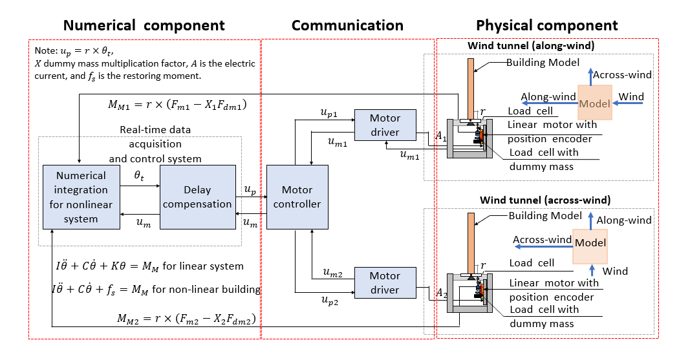

University of Toronto · PhD
Real-Time Aeroelastic Hybrid Simulation
Development and experimental validation of a real-time aeroelastic hybrid-simulation framework integrating numerical and physical substructures for a base-pivoting building model in a wind tunnel.
Wind EngineeringHybrid SimulationStructural DynamicsReal-Time ControlExperimental Mechanics

Original PhD research framework reproduced without alteration.
Key research contributions
- Developed a real-time aeroelastic hybrid-simulation framework.
- Coupled numerical and experimental substructures.
- Implemented delay compensation and real-time control.
- Validated the framework through wind-tunnel testing.